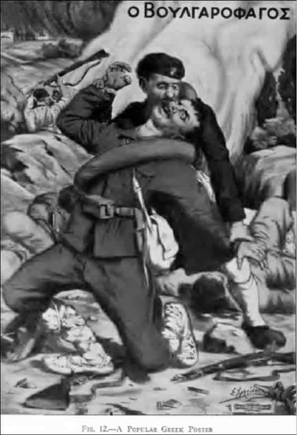

Savaş barbarlığı

Savaş barbarlığına bir örnek: Carnegie Raporu’nda yer veriler popüler Yunan posteri.
“Bulgarophagos” (Bulgar Yiyen) denilen Yunan askeri yakaladığı Bulgar askerinin yüzünü
ısırarak koparıyor. Göz oyan Yunan askeri posteri de vardır. Carnegie Raporu’nda kendisiyle
görüşülen bir Yunan subayının şu sözleri de aktarılır: “Barbarlarla uğraştığınız zaman
siz de barbar gibi davranmalısınız. Onların anlayacağı tek dil budur.”
(Carnegie Endowment for International Peace Report, s. 96-97.)
Tarihçi Spyridon Tsoutsoumpis anlatıyor:
“Yunan ordusunda savaşın barbarlaşması”
Askeri tarihçiler savaşın yürütülmesinde toplumsal kültürün önemini vurgulamışlardır. Ömer Bartov, anti-Semitizm ve anti-Slavizmin, doğu cephesindeki savaşın acımasızlığına sebebiyet verdiğini savunur: Irkçı ideoloji askerlerin büyük zorluklar karşısındaki dayanma gücünü artırırken sivillere karşı de barbarca uygulamalara yok açmıştır. Crai Cameron da köklü anti-Asyatik önyargıların Pasifik cephesindeki Amerikan birlikleri arasında barbarlığı artırdığını belirtir. Ancak, okuryazar ve şehirleşmiş toplumlardan gelen söz konusu askerlere nazaran, Yunan askerlerinin çoğu okuryazar değildi ve köylü kökenliydi. Yine de toplumsal kültürün, savaşı nasıl gördükleri ve yürüttükleri üzerinde büyük bir etkisi oldu. O devirdeki Yunan toplumunda çok yüksek düzeyde kişisel şiddet eğilimi vardı. Onur ve erkeklik, erkeklerin mallarını ve ailelerini korumak için şiddet kullanma yeteneklerine göre ölçülüyordu. Bu gibi kavramlar Yunan ordusu tarafından askerlerin moralini yükseltmek ve onları daha iyi katiller haline getirmek için kullanıldı. Ulus için savaşmak, erkeklerin mallarını ve ailelerini korumak için gösterdikleri şiddetin bir uzantısı gibi sunuldu ve böylece şiddet ve öldürme askerlere anlamlı ve cazip gelen bir kültürel kontekst içine oturtuldu. Bu da erkeklik ile askerlik arasında güçlü bir özdeşlik yarattı. Aynı zamanda, sivillere karşı cinsel şiddeti ve barbarlığı körükledi; cinsel organların koparılması, tecavüzler ve deri yüzmeler gibi vahşetleri yaygınlaştırdı. Bunlar, ordunun maskülen egemenliğini ve “ötekiler”in onursuzluğunu vurgulamak ve onları insanlıktan çıkarmak için yapılıyordu.1
1 Spyridon Tsoutsoumpis, “Culture, Combat and the Barbarization of Warfare Among Greek Soldiers”, International Conference on Occasion of the 100th Anniversary of The Balkan Wars 1912/13, Abstracts, Yıldız Teknik Üniversitesi, BALKAR, 11-13 October 2012, Istanbul, s. 37-38.